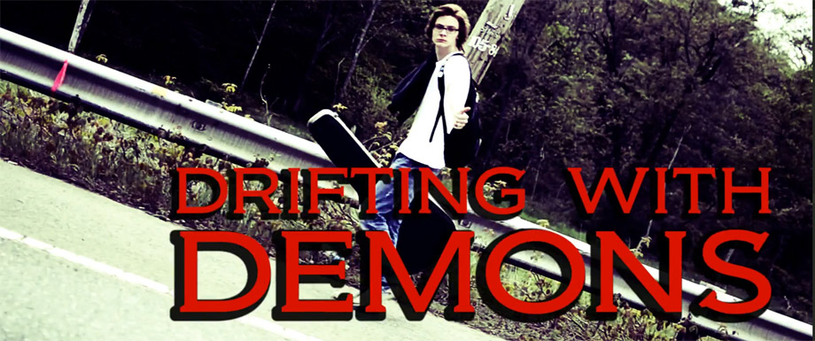
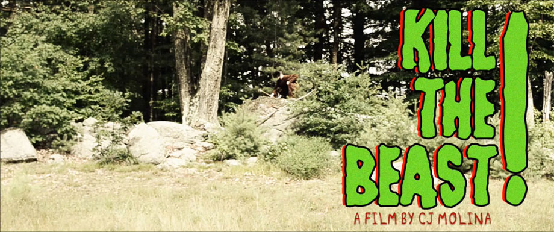
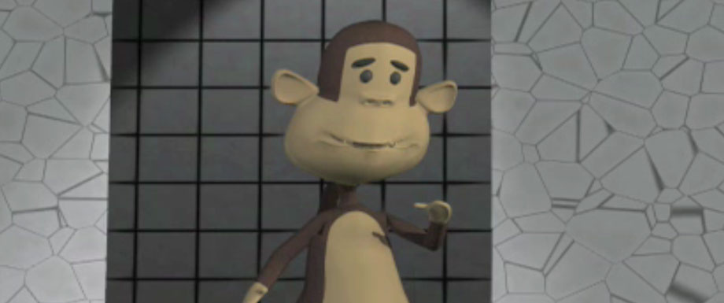
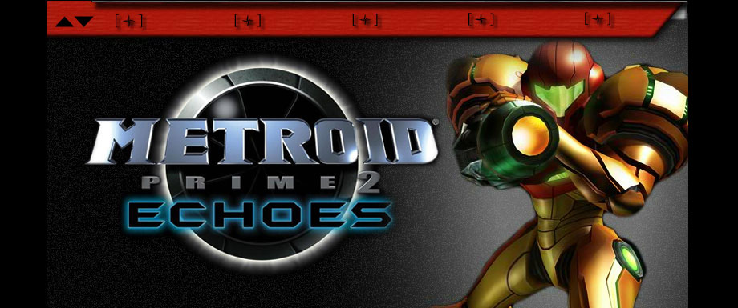
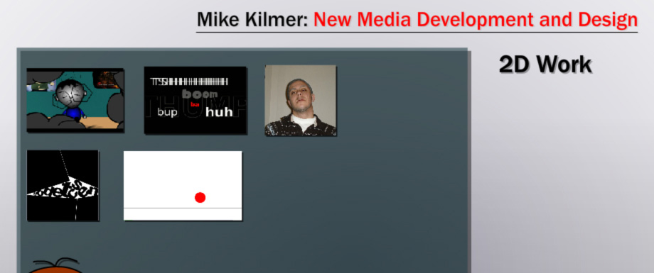
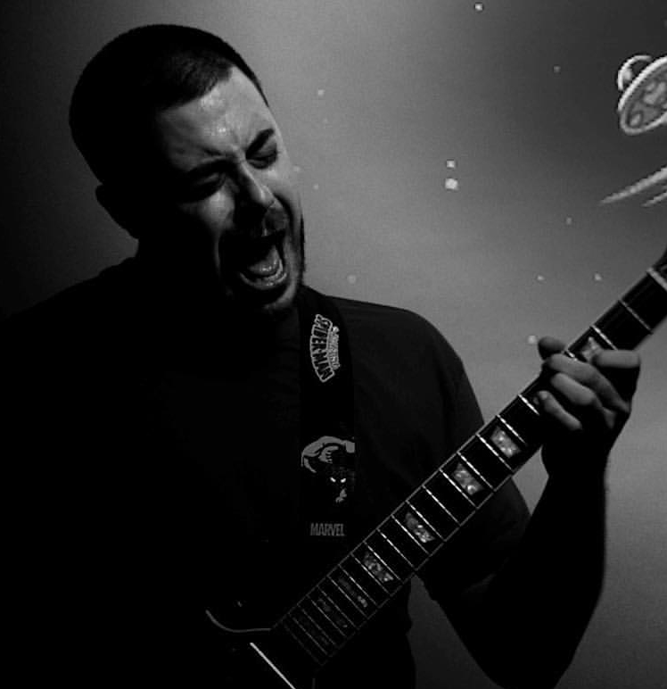

The Fast Track
View Site
Work Done: Development, Design Translation
Description: This was a redesign to an existing wordpress template. I coded all the PHP, HTML, CSS, and Javascript.
Designed by QuickBase
Resources: Wordpress, Photoshop, Illustrator, Git
Social Nerd Review
View Site
Work Done: Development,
Description: This was a drupal template that I modified for my Podcast website. I coded all the PHP, HTML, CSS, and Javascript and added mobile support.
Resources: Drupal, Photoshop, Git
addventures.com
View Site
Work Done: Development, Design Translation
Description: This was the launch of a brand new home page for the agency. I was given Illustrator files that I cut and re-coded in PHP, JavaScript, HTML, and CSS using the Drupal framework.
Designed by (add)ventures
Resources: Drupal, Illustrator, Git, Photoshop
FEMMEFACTOR.COM
View Site
Work Done: Development, Design Translation
Description: This was the launch of a new brand at NutraClick. I was given photoshop files for every page and cut and coded this using PHP, JavaScript, HTML, and CSS. This site was coded in ~3 days.
Designed by NutraClick
Resources: Git, Photoshop
PROBIOSLIM.COM
View Site
Work Done: Development, Design Translation
Description: This was the launch of a new brand at NutraClick. I was given photoshop files for every page and cut and coded this using PHP, JavaScript, HTML, and CSS. This site was coded in ~4 days.
Designed by NutraClick
Resources: Git, Photoshop
TESTX180.COM
View Site
Work Done: Development, Design Translation
Description: This was dedicated site to a product sold by NutraClick called Test X180. I was given photoshop files for every page and cut and coded this using PHP, Javascript, HTML, and CSS. This site was coded in 2 days.
Designed by NutraClick
Resources: Git, Photoshop
DRIFTING WITH DEMONS

View Short
Work Done: Acting, Music
Description: This was a short that had no script that my good friend Cj started filming impromptly. I came in about halfway through shooting, helped make one of the songs, and played a small role at the end of the film.
Resources: Cubase
LEMON HEADS
View Short
Work Done: Acting, Animation, Voice Over
Description: A live action short shot by Cj Molina. He tasked me with designing and animation of the moon. I also helped with the lighting and setup and made a small acting cameo at the end.
Resources: Flash, Photoshop, Adobe Premiere, Sonic Foundry Acid
ILLUSTRATION, PHOTOGRAPHY AND OTHER VARIOUS WORKS
View Website
BRASS KNUCKLE BROADS!
View Short
Work Done: Acting, Motion Graphics, Intro Animation, Music
Description: I animated the musical notes, the "Sonador" intro animation, and various visual effects in the short.
Resources: Flash, After Effects, Adobe Premiere, Photoshop
KILL THE BEAST!

View Short
Work Done: Acting, Intro Animation, Title, Music, Typography
Description: I animated the "Sonador" intro animation, acted as "the beast," added the typography, and composed the main riff for the soundtrack for the film.
Resources: FL Studio, Flash, After Effects, Adobe Premiere, Photoshop
THY NUTCRACKER
View Short
Work Done: Title Animation, Music
Description: Cj Molina came to me with an idea for the Sonador productions logo and what he wanted it to look like. I took his drawing, converted it into 8 Bit and animated it in Flash. Then I brought it into after effects
and added the VCR effects to make it appear old. I also helped make the music for the short.
Resources: FL Studio, Flash, After Effects
A MOMENT OF SILENCE
View Animation
Work Done: Concept, Design, Storyboarding, Animation
Description: This was a college project for my Motion Design class. We were to select a song and animate the sounds using nothing but typography. It took about a month, and was my first real project using After Effects.
Resources: After Effects
DANCE CONTEST

View Animation
Work Done: Concept, Design, Storyboarding, Animation, Rigging, Modeling
Description: This was a college project, where I learned how to animate in 3D using Lightwave. It was a semester long project, where the environment and concept was given to us by the professor.
Resources: Lightwave 3D, Final Cut, After Effects, Sonic Foundry Acid
EXPLODE / BUILD
View Animation
Work Done: Concept, Design, Storyboarding, Animation
Description: This was as semester long college project where I was given binary opposites and told to make an animated short using Flash.
Resources: Flash, Adobe Premiere, Sonic Foundry Acid
THE HISTORY AND EVOLUTION OF METROID

View Website
Work Done: Concept, Design, Development
Description: This was a semester long project to learn to develop in Flash. I used this as a starting point to learn Actionscript 3. I chose Metroid based on a childhood love of the franchise, and avid love of videogames in
general.
Resources: Flash
OLD FLASH PORTFOLIO SITE

View Website
Work Done: Concept, Design, Development
Description: This was the first design of my portfolio site. It was an experiment in UI and UE design. It was not as successful as I would have hoped but was a great learning experience and showcases my experience with flash.
Resources: Flash
MIKE KILMER

My name is Michael Christopher Kilmer. I was born and raised in Worcester Massachusetts, and currently reside in West Boylston. I graduated from the Visual Design program at the University of Massachusetts Dartmouth in 2008 with a Bachelor
of Fine Arts in Digital Media.
I am primarily a Front End Developer, I have experience developing websites using: HTML, CSS, Flash, PHP, MySQL, and version control system Git. Most of my work has been through a LAMP (Linux, Apache, MySQl, PHP) enviroment. I specialize in Design Translation, or for lack of
a better term: cutting. I take a finished design, chop it up, and make fully functional webpages.
I also have experience working with video editing, motion graphics, storyboarding, 3D Modeling, 3D Rigging, Audio mixing, and both 3D and 2D animation.
In my spare time I host a video game podcast called Running In Circles. You can subscribe on iTunes or directly through soundcloud. I also play guitar, video games, watch films, listen to all different kinds of music, read, attend live shows, draw, animate, record, and hang out with friends. I have a passion for music and the joy
of creating something out of nothing and I always try to keep current with the latest software, gadgets, and gizmos.